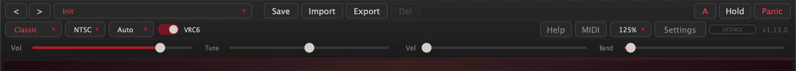
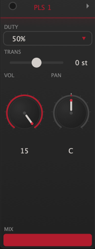
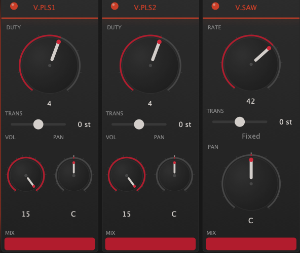
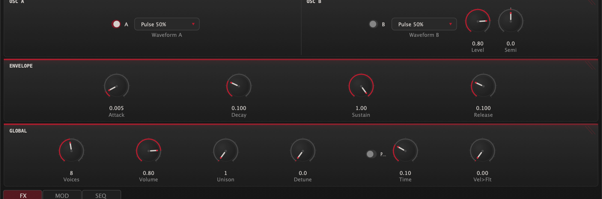
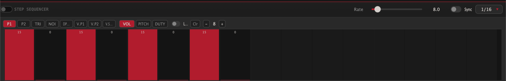

Meet Cartridge
Cartridge is a chiptune synthesizer built around the Ricoh 2A03, the sound chip that scored a generation of 8-bit games. It is not a sample pack and not a lo-fi filter. Every voice is synthesized live, with the chip's real quirks intact: the four pulse duties, the 32-step triangle staircase, the two-mode noise generator, the 1-bit sample channel, and the nonlinear way the hardware mixed them all together.
Two engines share this palette:
Classic is the hardware, honestly. Eight monophonic channels (five from the 2A03, three more from the VRC6 expansion), each with its own strip of controls, per-channel panning the real chip never had, and a per-channel step sequencer that plays the role of tracker-style macros.
Modern takes the same waveforms and puts them in a conventional polyphonic synth voice: up to 16 notes, dual oscillators, unison detune, and a full ADSR. Chip tone, synth workflow.
The interface stacks top to bottom: the top bar (presets, engine, global controls), a waveform display, the channel strips or Modern panel, the accordion bars (FX, MOD, SEQ), and a playable keyboard. Everything in this manual is reachable from that one window.
Read 04 · The Classic Engine before anything else. Understanding what each channel can and cannot do (the triangle has no volume control, noise has two personalities, the sample channel maps drums to specific keys) is what separates fighting the chip from playing it.
Getting Started
Install
On macOS, open the disk image and run the installer inside it, ticking the formats you want. It is signed and notarised, so it opens without security warnings, and it installs the manual and an uninstaller to Applications ▸ Stay Cool and Stay Cool.
On Windows and Linux, unzip the download and copy each format into place:
| Platform | Format | Destination |
|---|---|---|
| Windows | VST3 | C:\Program Files\Common Files\VST3 |
| CLAP | C:\Program Files\Common Files\CLAP | |
| Standalone | anywhere | |
| Linux | VST3 / CLAP | ~/.vst3 · ~/.clap |
| Standalone | anywhere on your path |
Restart your DAW afterwards so it rescans. Logic and GarageBand sometimes want a full quit and relaunch before a new AU appears.
For reference, the macOS installer places files at /Applications and /Library/Audio/Plug-Ins/{Components,VST3,CLAP}.
Activate
Your licence key arrives by email right after purchase. Click the DEMO badge in the top bar, paste the key, and click Activate. Activation touches the internet once; after that the licence verifies offline, forever. One licence covers three machines. Chapter 12 has the full story, including offline activation and moving seats between machines.
First sound
Open the standalone or load Cartridge on an instrument track and play. The Init preset is a bare Classic patch. For a guided tour of what the instrument can do, step through the factory presets with the arrow keys. Names like Sequenced and Rock are whole performances: hold one key and let the step sequencer work.
The Top Bar

Presets row
| Control | What it does |
|---|---|
| < > | Previous and next preset. Wraps around, and skips presets that belong to the other engine, so browsing in Classic never lands on a Modern patch. The left and right arrow keys do the same. |
| Preset menu | Factory presets grouped by category and filtered to the current engine. Your user presets appear after them, in every mode. |
| ● dot | Appears when the live sound has drifted from the loaded preset. Save to keep it. |
| Save | Saves the current state, step sequences included, as a user preset. Asks before overwriting. |
| Import | Loads .cartpreset presets, .cartbank banks, raw .xml, or .vgm/.vgz chip logs (see chapter 10). |
| Export | Writes the current preset to a .cartpreset file you can share. |
| Del | Deletes the selected user preset. Factory presets can never be deleted; the button dims to remind you. |
| A / B | Two full parameter states, step sequences included. Each click stores the live state into the current slot and swaps to the other, so edits made on B stay on B. Notes keep ringing through a same-engine swap. |
| Hold | Latch. Notes sustain until Hold is toggled off, then everything releases at once. Same as the \ key. |
| Panic | All notes off, immediately. Same as Space. |
Engine row
| Control | What it does |
|---|---|
| Classic / Modern | Switches engines. The centre panel swaps between channel strips and the Modern panel, and the preset browser re-filters. |
| NTSC / PAL | Console region. Pitched notes stay in tune either way, but hardware envelopes and sweeps run about 17% slower in PAL, and both the noise and sample-channel timing tables change flavour. PAL is subtly slower and darker. |
| Split / Auto / Mono / Layer | Classic MIDI routing. Chapter 06. |
| VRC6 | Enables the three expansion channels and reveals their strips. Disabled while the Modern engine is active. |
| Help | A quick-reference card: the chip, the jargon, the shortcuts. |
| MIDI | The CC map, plus four Learn slots for your own controller assignments (chapter 06). |
| 100% | UI scale: 100 / 125 / 150 / 200 percent. A true zoom; the choice is remembered. |
| Settings | Audio and MIDI device setup. Standalone only. |
| LICENCE badge | Your licence state. Chapter 12. |
Master row
Four sliders: Vol (master output), Tune (±100 cents), Vel (velocity sensitivity, 0 means velocity is ignored, the hardware way), and Bend (pitch-bend range, 1 to 24 semitones).
Double-click anywhere on the top bar for fullscreen. CtrlCmdF does the same.
The Classic Engine
Eight channels, each a strip, each one voice. Left to right: PLS 1, PLS 2, TRI, NOISE, DPCM, then with the expansion on, V.PLS1, V.PLS2, V.SAW. Every strip has an enable LED, a MIX fader (the channel's level after the chip), a PAN knob, and, on melodic channels, a TRANS transpose of ±24 semitones. The arrow in a strip's header opens its detail panel for the deeper hardware controls.


Pulse 1 & Pulse 2
The lead voices. Four duty cycles: 12.5% is thin and nasal, 25% is the classic lead, 50% is a hollow square, and 75% is the inverted 25% wave, which the chip renders identically to 25%. That duplicate is not a bug; it is the hardware being the hardware.
VOL (0–15) is the chip's own 4-bit level and part of the timbre. With Constant Volume off, VOL instead sets the speed of the hardware decay envelope, which counts the note down from 15; add Envelope Loop and it re-triggers endlessly for a buzzing tremolo. The sweep unit (period, shift, negate) bends pitch the hardware way, and yes, it will swallow the note entirely when the sweep runs out of range. That silence is authentic. Pulse 1 and Pulse 2 even negate their sweeps slightly differently, exactly like the chip.
Triangle
The bass voice. A 32-step staircase triangle one octave below the pulse range, with the gritty edge that quantization gives it. It has no volume control; the hardware never had one. Shape the level with its MIX fader, or shorten notes with the linear counter (LIN.RLD low = clipped, staccato notes).
Noise
A 15-bit shift register with two personalities. Long mode is full white noise for hats, snares, and wind. Short mode loops a 93-step sequence and turns metallic and pitched, the classic laser-engine buzz. PERIOD (0–15) runs from bright hiss down to low rumble. By default, played notes retune the noise (higher key, brighter noise); the factory drum presets fix the period instead so every hit lands identically.
DPCM
The sample channel: 1-bit delta-coded playback through a 7-bit converter, which is exactly why it crunches. Four built-in drums (Kick, Snare, Hi-Hat, Tom) plus sixteen user slots that accept .dmc or .wav files (loaded from the MOD bar's DPCM tab; they travel inside your DAW session).
Four keys map straight to the kit, matching a standard drum map: C2 kick, D2 snare, F#2 hi-hat, A2 tom. Any other key plays whichever sample the Sample menu selects. RATE (0–15) is playback speed; 15 is the drums' native rate, and lower values pitch them down into ever-darker territory. Notes do not track pitch here; RATE is the pitch.
VRC6 expansion
Three more channels, from the expansion chip found in a handful of late-era cartridges. The two VRC6 pulses have an eight-step duty knob (6.25% to 50% in even steps), a finer palette than the 2A03's four, with no envelope or sweep: cleaner, more synth-like. The sawtooth is a coarse 32-level accumulator saw, reedy and bright, unlike anything on the base chip.
The saw's RATE knob is clean up to 42, its default. Push past 42 and the accumulator overflows: the tone breaks into snarling, ring-mod-like distortion. That is not a malfunction. It is a dirty little instrument hiding at the top of the knob.
The mixer is part of the sound
Cartridge mixes its channels through the 2A03's measured nonlinear converter curves, not a linear sum. Stacked pulses compress into each other; the triangle, noise, and sample channel share one curve, so a loud drum sample audibly ducks the bass. If a mix feels alive in a way a DAW mixer doesn't, this is why. Per-channel PAN (constant-power, displayed as C, L50, R100 and so on) then places each voice in stereo, a luxury the console never offered.
The Modern Engine

Switch the engine combo to Modern and the channel strips give way to a polyphonic synth that speaks fluent chip. Up to 16 voices, each with two oscillators drawing from the same seven waveforms: four pulse duties, the 32-step triangle, the accumulator saw, and the noise generator.
Oscillators
Osc A carries the note. Osc B layers on top with its own waveform, a Level control, and Semi detune of ±24 semitones in tenths, so it works as an octave or fifth layer, not just a fattener. Fractional detune beats slowly against A for movement.
Each oscillator shows its wave shape in a small display beside the menu. The display is a control: click it to cycle through the seven waveforms, right-click for the full list.
Envelope
A full ADSR per voice. Attack is linear for that instant chip snap; decay and release are exponential for natural tails. The time knobs are weighted toward the fast end, where chiptune lives: attack defaults to 5 ms.
The envelope section draws the curve, and the curve is editable: drag the nodes directly — attack, decay and release move horizontally, sustain vertically. The knobs and the curve are two views of the same envelope; use whichever feels faster.
Global
| Control | Range | Notes |
|---|---|---|
| Voices | 1–16 | Set 1 for mono lead work. Stealing favours the oldest note. |
| Volume | 0–1 | Engine output level. |
| Unison | 1–7 | Stacked copies per oscillator. With Osc B on, 7-voice unison means 14 oscillators per note. Loudness is normalised, so unison widens without getting louder. |
| Detune | 0–50 cents | Unison spread, symmetric around the note. |
| Porta + Time | 10 ms–2 s | Glide between notes without resetting oscillator phase. Independent of the Classic engine's portamento. |
| Vel>Flt | 0–1 | Velocity-to-filter amount, for use with the FX filter. |
Two things Modern deliberately leaves behind: the nonlinear hardware mixer and per-channel panning. The Modern voice is mono at the source; its stereo width comes entirely from chorus, delay, and reverb. For a wide Modern patch, reach for those.
MIDI
Routing modes (Classic)
| Mode | Behaviour |
|---|---|
| Split | Each MIDI channel owns a chip voice: 1 Pulse 1 · 2 Pulse 2 · 3 Triangle · 4 DPCM · 5/6/7 VRC6 Pulse 1/Pulse 2/Saw · 10 Noise. The tracker workflow: one DAW track per channel, total control. |
| Auto | Notes round-robin across every enabled channel, giving pseudo-polyphony on hardware voices. Repeated notes reuse their channel; when everything is busy, the oldest note is stolen. |
| Mono | Everything plays Pulse 1. Last note wins. |
| Layer | Every enabled channel plays every note. Thick, instant, gloriously excessive. |
In Auto and Layer modes, a channel takes part when its enable LED is on. Pull a channel's MIX to zero and it still receives notes; switch its LED off to take it out of the rotation.
The Modern engine ignores routing modes; it is simply polyphonic on all channels, and it responds to per-note pitch bend from MPE controllers, so two fingers on the same key bend independently.
Pitch bend
Range is the top bar's Bend slider. Bend retunes the pulses, triangle, and VRC6 voices; the noise and sample channels do not bend. In Split mode, bend follows its MIDI channel to that one voice, which means per-channel bend automation, a properly tracker-ish trick.
Control changes
| CC | Target |
|---|---|
| 1 | Mod wheel vibrato (performance) |
| 11 | Master volume |
| 64 | Sustain pedal |
| 71 | Filter resonance |
| 74 | Filter cutoff |
| 91 | Reverb mix |
| 93 | Chorus mix |
The mod wheel needs no setup: push it and both engines add classic vibrato, up to ±50 cents, independent of the LFO section — the LFO stays a sound-design layer, the wheel is performance. It no longer writes to the LFO vibrato depth parameter, so riding the wheel cannot change a saved patch; if you preferred the old routing, map CC 1 with a Learn slot.
The MIDI button in the top bar shows this map plus four Learn slots. Click Learn, turn a knob on your controller, and that CC is captured. Targets include channel volumes, filter, effect mixes, and the LFO. A learned CC overrides the built-in map for that number, and your mappings survive preset changes.
Sustain and Hold
The sustain pedal (CC 64) and the Hold button do the same thing by different hands: while either is down, note-offs are suppressed. When the last of them lifts, everything releases together. If a stuck controller leaves the pedal down, CC 121 (reset all controllers) clears it, as does Panic.
The Step Sequencer

This is Cartridge's answer to tracker macros: a 16-step modulation sequencer, per channel, that retriggers from step one on every note-on. It does not play notes for you; it plays the voice, reshaping volume, pitch, and duty while you hold the key. It is the difference between a preset that sounds like a tone and one that sounds like a game.
The grid
Pick a channel (P1 through V.SAW), pick a lane, and draw:
| Lane | Range | What it does |
|---|---|---|
| VOL | 0–15 | Absolute volume per step. Honoured by the pulses, noise, and VRC6 pulses; the triangle, saw, and sample channel have no volume register to override. |
| PITCH | ±12 st | Semitone offset per step. Instant arpeggio-on-one-key effects live here. |
| DUTY | 0–3 / 0–7 | Duty override per step (eight values on the VRC6 pulses). In the Modern engine this lane switches the oscillator waveform between the four pulse duties. |
Each lane has its own length, set with the − and + stepper or simply by drawing past the end. A lane of length zero is off. Clr resets the selected lane.
Loop, and lanes as polyrhythm
The Loop toggle applies per lane. Looped lanes wrap; un-looped lanes play once and hold their last value, which is exactly how a volume envelope should behave. Because every lane keeps its own length, a 3-step pitch loop against a 4-step volume loop drifts in and out of phase like a proper tracker line. Lanes advance in lockstep on the same clock; their lengths make the rhythm.
Clock
Rate runs 1 to 60 Hz free, or flip Sync and choose a division from 1/1 to 1/32, triplets included, locked to host tempo. 60 Hz is the magic number for authenticity: that is one step per video frame, the rate every classic soundtrack macro ran at, and the rate VGM-imported instruments arrive with.
Modulation
The MOD bar holds four panels: LFO, portamento, the arpeggiator, and the sample channel's controls.
LFO
One global sine LFO, 0.1 to 20 Hz, with two depth controls that run simultaneously: Vibrato (pitch, up to ±2 semitones) and Tremolo (level, dipping below unity so engaging it never jumps the volume). It is free-running and does not retrigger per note, which keeps chords shimmering rather than pulsing in lockstep.
Portamento
Glide for the Classic engine, 10 ms to 1 second. The Modern engine has its own independent portamento on its panel; the two do not share settings.
Arpeggiator
| Control | Options |
|---|---|
| Pattern | Up · Down · Up-Down · Random · As Played |
| Rate | 1–30 Hz free, or tempo-synced (1/1 to 1/32 with triplets) |
| Octaves | 1–4, repeating the held chord upward |
| Gate | 10–100% of each step, for staccato through legato |
The arpeggiator sits before the engines and drives either one. Hold a chord and it does the rest; release everything and it stops cleanly, no ringing tails.
The arpeggiator's output always arrives on MIDI channel 1. In Split mode that means an arpeggiated chord plays entirely on Pulse 1. For arps across channels, use Auto mode and let the round-robin spread the notes.
DPCM panel
Enable the sample channel, choose the active sample, and load your own. .dmc files load raw; .wav files are converted to the chip's 1-bit format on the way in, which is where they pick up that unmistakable crunch. Sixteen user slots, embedded in your DAW session so projects stay portable.
Effects

Five effects in a fixed chain, all off by default, every one chosen to flatter chip waveforms. The chain runs Crush → Filter → Chorus → Delay → Reverb, and the stereo split happens between Filter and Chorus. In the Classic engine your per-channel pans pass through untouched; in the Modern engine, chorus, delay, and reverb are the sources of width.
Crush
Bit-depth reduction (16 down to 1 bit, continuously) plus sample-rate reduction (up to 50×). The chip is already lo-fi; this is for going further, from vintage-handheld grit to total collapse.
Filter
A clean state-variable filter: low-pass, band-pass, or high-pass, 20 Hz to 20 kHz, resonance up to self-oscillating territory. CC 74 and 71 reach it from a controller, and the Modern engine's Vel>Flt drives it from velocity.
Chorus
A true stereo chorus, two taps in quadrature, designed so square waves widen instead of turning into vibrato. Subtle rates and depths are where it shines on chip tone.
Delay
Stereo ping-pong. Feedback saturates gently instead of running away, and each repeat passes through a darkening filter, so trails sink backward like tape. Free time from 10 ms to 2 seconds, or tempo-synced divisions from 1/1 to 1/32 with triplets.
Reverb
Size, damping, width, mix. From a small-room sheen to washed-out ambient tails; the Ambient Drone preset shows its long-tail behaviour.
After everything, a gentle soft limiter rounds off the output. Stack all five effects as hard as you like; the output cannot digitally clip, it just saturates musically.
Presets & VGM Import
The factory library
95 presets plus Init: 75 for the Classic engine, 21 for Modern. Categories run from the practical (Bass, Lead, Pad, Pluck/Key, Arp) through the percussive (Percussion, Rock, with drum kits mapped C2 kick, D2 snare, F#2 hat, A2 tom) to the theatrical (SFX, Atmosphere, Texture, Ensemble, Sequenced). The Sequenced bank is the step sequencer showing off: hold one key, get a riff.
Your presets
Saved presets live as single files, one per preset, in ~/Library/Cartridge/Presets on macOS (the equivalent app-data folder elsewhere). Everything is captured: parameters, all eight step sequences, the works. Export writes a shareable .cartpreset; Import reads presets and .cartbank bundles, and a bank imports as its own category so it arrives as one tidy group in the browser.
VGM import
This one is special. Feed the Import dialog a .vgm or .vgz chip log and Cartridge studies how the music drove the 2A03: every write to the volume, pitch, and duty registers, frame by frame. Each distinct instrument it finds becomes a user preset, with the original's per-frame behaviour rebuilt as a 60 Hz step sequence on the right channel. Load one, hold a key, and you are playing the instrument from the original soundtrack, macros and all. Imports land in the browser as one category per file, named after the source.
Where VGM files come from
Tracker software exports them, so your own compositions are the first and best source. The homebrew and demoscene communities release them freely, netlabels and chiptune archives distribute them with permission, and hardware loggers can capture the register stream from a running board. If you dump music from a cartridge you own, the law on personal-use copies varies by country, and weighing it is up to you.
Worth knowing what the import actually takes: register configurations and per-note envelopes — the instruments, never the melodies. Extraction ends at each note boundary by design, so a tune cannot pass through it. The music in any file you import belongs to whoever wrote it, and what you release built on these sounds is, as always, yours and your responsibility.
Instruments are only extracted where the log shows the sound moving (volume, pitch, or duty changing during notes). A file that arrives with "no instruments found" is not broken; it just never modulated the chip.
Keyboard Shortcuts
Playing
| Keys | Action |
|---|---|
| A–; row | Play notes. A is C, the row above (W E T Y U O P) plays the black keys. |
| [ / ] | Octave down / up. A small toast shows the new octave, then fades. |
| - / = | Velocity down / up in steps of 10%. |
| \ | Hold (latch) on/off. |
| Space | Panic. All notes off. |
Channels
| Keys | Action |
|---|---|
| 1–5 | Toggle Pulse 1, Pulse 2, Triangle, Noise, DPCM. |
| 6 7 8 | Toggle the three VRC6 channels' mix. |
| CmdV | VRC6 expansion on/off. |
| Tab / ShiftTab | Cycle the focused channel. The QWERTY keyboard follows, so typing plays the focused channel in Split routing. |
| CmdShiftS | Solo the focused channel. |
| CmdShiftM | Mute the focused channel. |
| Esc | Un-solo: restore every channel's mix. |
Presets and window
| Keys | Action |
|---|---|
| ← / → | Previous / next preset. |
| CmdS | Save preset. |
| CtrlCmdF | Fullscreen (or double-click the top bar). |
On Windows and Linux, read Cmd as Ctrl.
Licence & Activation
The badge at the top right tells the story: DEMO in red before activation, a quiet LICENCE after. In demo mode the instrument is fully functional, but it interrupts the audio with a short burst of noise about every 45 seconds. Everything else is identical to the licensed build.
Activating
Click the badge, paste the key from your purchase email, click Activate. The plugin checks in with the activation server once, binds the seat to your machine, and from then on verifies offline.
Seats
One licence, three machines. To move on, click the badge on a machine you are retiring and choose Deactivate this machine; the seat frees up immediately. If that machine is dead and cannot deactivate itself, email support and we will release it.
Offline machines
A machine with no internet activates through staycoolandstaycool.com/cartridge/activate, from any online device. Copy the machine code from the licence dialog on the offline machine, enter it on that page with your key, and paste the licence it returns back into the dialog. To later release that machine's seat, the same page accepts its activated licence (the file license.key in Cartridge's settings folder). The offline machine itself never connects.
Offline machines
A studio machine with no internet can still activate: the licence dialog shows a machine code with a copy button. Send us that code with your key, and you will get back a licence bound to that machine that activates with no connection at all.
Questions, stuck keys, seat juggling: see staycoolandstaycool.com/cartridge/support, or email support@staycoolandstaycool.com with your order number.
Specifications
| Item | Detail |
|---|---|
| Formats | VST3 · AU (macOS) · CLAP · Standalone |
| Platforms | macOS 11+ (Intel & Apple silicon) · Windows 10+ · Linux |
| Engines | Classic: 8 monophonic channels (2A03 + VRC6 expansion) · Modern: 16-voice polyphonic |
| Synthesis | Bandlimited at the host sample rate; hardware-accurate behaviour without cycle-emulation aliasing |
| Mixing | Measured 2A03 nonlinear DAC curves; constant-power per-channel pan (Classic) |
| Sequencer | 16 steps × 3 lanes × 8 channels; free-run 1–60 Hz or host-synced |
| Effects | Bit crush · SVF filter · stereo chorus · ping-pong delay · reverb · soft limiter |
| Presets | 95 factory + Init · unlimited user presets · .cartpreset / .cartbank exchange |
| Import | .vgm / .vgz instrument extraction · .dmc / .wav samples |
| MIDI | 4 routing modes · MPE per-note pitch bend (Modern) · 7 mapped CCs + 4 learnable · microtuning (equal, just, Pythagorean, meantone via host automation) |
| Licence | 3 machines per licence · offline after activation |
Cartridge references the Ricoh 2A03 sound generator and VRC6 expansion audio by their part designations. All synthesis is original; no ROMs, recordings, or code from any console are included.